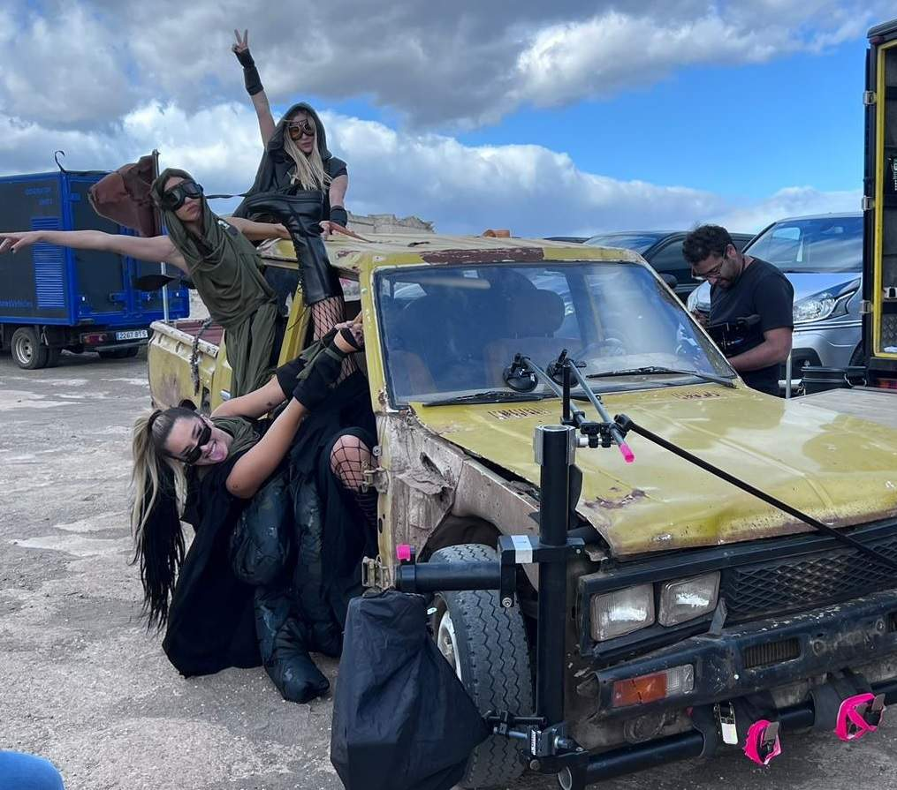

Canarias se ha convertido en una de las localizaciones favoritas para rodar videoclips: paisajes volcánicos, playas, ciudades con carácter y buena luz casi todo el año, a pocas horas de vuelo de Madrid o Europa. Pero un videoclip no se sostiene solo con la localización. El movimiento de cámara es lo que le da energía, y ahí el equipo de grip es decisivo.
Por qué rodar un videoclip en Canarias
- Variedad en poco espacio. Desierto, bosque, costa y ciudad en una misma jornada sin grandes desplazamientos.
- Luz y clima. Temperaturas suaves en invierno, cuando en otras zonas de Europa es difícil rodar exteriores.
- Incentivos fiscales para producciones audiovisuales, que repasamos en rodar en Canarias: incentivos y permisos.
- Industria local con material y técnicos en las islas, sin depender de envíos desde la península.
Movimientos de cámara que funcionan en un videoclip
1. Performance: cámara estabilizada
El artista cantando o bailando pide una cámara que respire con él. Un gimbal como el Ronin RS3 Pro con Tilta Advanced Ring es ágil para cámaras ligeras; con un paquete de cine más pesado entra el DJI Ronin 2 (hasta 14 kg). Para jornadas largas, el Easyrig Vario 5 reparte el peso y salva la espalda del operador. Lo comparamos en gimbal o Easyrig.
2. Travellings: dolly y slider
Cuando el plano necesita elegancia y precisión, como un acercamiento lento al artista o un recorrido lateral por una coreografía, el dolly sobre vías sigue siendo insuperable porque permite repetir exactamente el mismo movimiento en cada toma. Para desplazamientos cortos, el Panther Vario Slider se monta en minutos.
3. Planos altos sin grúa grande
Un punto de vista elevado da escala a la coreografía o a la localización. El ladderpod lleva la cámara hasta 5,2 m de altura con un montaje mucho más sencillo que una grúa.
4. Coches y carretera
Pocos videoclips urbanos se resisten a un coche. El carmount fija la cámara al vehículo para planos del artista conduciendo o asomado; el camera car con grúa resuelve los seguimientos en carretera con cambios de altura durante la toma.

Escena y equipo: resumen rápido
| Escena | Equipo de grip |
|---|---|
| Performance y baile | Gimbal (RS3 Pro o Ronin 2) + Easyrig |
| Acercamiento lento al artista | Dolly sobre vías |
| Detalle o movimiento corto | Slider |
| Plano alto de la localización | Ladderpod |
| Artista en el coche | Carmount |
| Seguimiento en carretera | Camera car con grúa y cabeza estabilizada |
Cómo ajustar el grip al presupuesto
No todos los videoclips tienen el mismo presupuesto, y no hace falta todo el catálogo para conseguir un buen resultado. Algunas pautas:
- Elige un movimiento firma. Un único plano espectacular, de grúa o de camera car, puede vertebrar el vídeo; el resto se resuelve con gimbal.
- Agrupa por localización. Concentrar el material pesado en un solo día ahorra jornadas de alquiler.
- Piensa en la velocidad de montaje. En un videoclip se cambian muchos setups al día; los equipos rápidos de montar dan más planos por jornada.
- Pide asesoramiento pronto. Con el tratamiento y las referencias se puede proponer la configuración más eficiente.
Videoclips rodados con equipo K Grip
En nuestra sección de trabajos puedes ver piezas como DURO y BUENAS NOCHES de Quevedo o EL TONTO de Lola Indigo y Quevedo, donde el movimiento de cámara forma parte de la identidad visual del vídeo. Si preparas un videoclip en Tenerife o Gran Canaria, envíanos el tratamiento o las referencias.
Preguntas frecuentes
¿Qué equipo de grip se necesita para un videoclip?
Depende del estilo, pero lo más habitual es un gimbal para la performance, dolly o slider para travellings, soporte de altura para planos altos y carmount o camera car si hay coches.
¿Se pueden rodar videoclips en Canarias todo el año?
Sí. El clima suave permite rodar exteriores prácticamente todo el año, y las islas cuentan con material y técnicos locales.
¿Cuánto antes hay que reservar el material?
Lo antes posible en cuanto haya fechas. En temporada alta de rodajes, equipos como el camera car o los dollies se reservan con antelación.